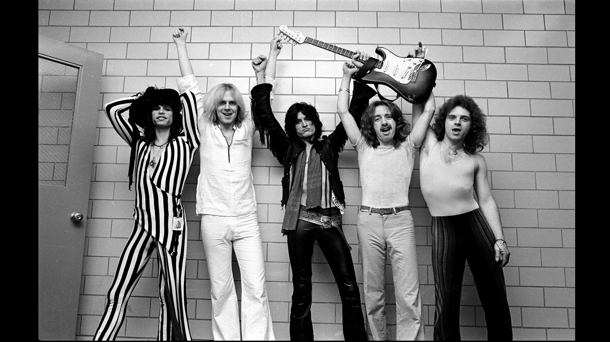

AEROSMITH
Es una banda estadounidense de rock formada en Boston en 1970. La década en donde estuvo activa fue entre 1970 a 1979.su sonido, agresivamente rítmico, tiene raíces en el blues, y contribuyó a establecer el sonido del hard rock y pop rock. En 1964, Steven Tyler forma su propia banda llamada The Strangeurs (Más tarde Chain Reaction) con Don Solomon en Nuevo Hampshire. Mientras tanto, Perry y Hamilton forman la banda Jam Band (comúnmente conocida como "Joe Perry's Jam Band") basada en el sonido del blues. Hamilton y Perry se mudan a Boston, Massachusetts en septiembre.

Integrantes
- Steven Tyler (Vocalista)
- Joe Perry (Guitarra)
- Tom Hamilton (Bajo)
- Joey Kramer (Batería)
- Brad Whitford (Guitarra)
Canciones más exitosas
- Dream On
- Crazy
- Cryin
- Amazing
- I Don´t want to miss a thing